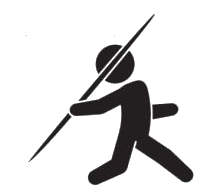
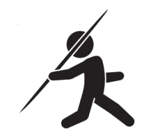

Los 100 metros lisos, 100 metros planos o 100 metros llanos es una carrera de atletismo en la que se tienen que recorrer 100 metros en un suelo nivelado, libres de todo obstáculo, con la mayor rapidez posible. Se considera, en general, como la competición de carreras de velocidad más importante. Los mejores atletas la realizan en un tiempo menor a 10 s (segundos) de duración, durante los que efectúan unas 45 zancadas con una velocidad media de 37,58 km/h (kilómetros por hora).
Está incluida dentro del programa de atletismo en los Juegos Olímpicos desde su primera edición para los hombres y desde la cita olímpica en Ámsterdam 1928 para las mujeres.
Los atletas con el récord mundial de la prueba son, en la categoría masculina, Usain Bolt con un tiempo de 9,58 s, y para la categoría femenina Florence Griffith Joyner con una marca de 10,49 s.

Los 200 metros lisos o 200 metros planos es una prueba de velocidad del atletismo actual, que se inicia en la curva de la pista inmediatamente anterior a la recta de meta, lo que implica que los atletas no se sitúan en la salida a la misma altura, ya que de otro modo los corredores situados más hacia el exterior recorrerían una distancia superior. Las carreras disputadas con un viento mayor a 2,0 m/s (metros por segundo) no son aceptables para propósitos de récords de acuerdo a reglas de la (IAAF).
Los atletas con el récord mundial de la prueba son, en la categoría masculina, Usain Bolt con un tiempo de 19,19 s, y para la categoría femenina Florence Griffith Joyner con una marca de 21,34 s.

Los 400 metros lisos o 400 metros planos es una prueba de velocidad mantenida del atletismo actual. En el caso de pistas al aire libre, los atletas corren toda la carrera cada uno por uno de los carriles en que se divide la pista, situándose la salida de manera escalonada en cada uno de los carriles de la primera curva, para así evitar que los competidores de los carriles exteriores recorran más metros que los de los carriles interiores. En el caso de pistas cubiertas, cuya longitud en la calle interior es de 200 m (la mitad que en las pistas exteriores), los corredores solo corren por su calle hasta el final de la segunda curva de la primera vuelta, momento a partir del cual pasan a correr por calle libre, corriendo normalmente por las calles interiores.
En su modalidad masculina, forman parte del programa de atletismo en los Juegos Olímpicos modernos desde su primera edición celebrada en Atenas en 1896. La modalidad femenina no debutaría hasta los Juegos Olímpicos de Tokio 1964.
Los atletas con el récord mundial de la prueba son, en la categoría masculina, Wayde van Niekerk con un tiempo de 43,03 s, y para la categoría femenina Marita Koch con una marca de 47,60 s.

Los 110 metros vallas son una prueba del atletismo que solo se disputa en su modalidad masculina ya que en la rama femenina se disputan los 100 metros vallas.
El origen de esta prueba se encuentra en Gran Bretaña en 1830 donde se organizó una carrera de 139 yardas en las que habían de superar 10 vallas. Posteriormente, en 1864 se fijó la distancia a recorrer en 120 yardas (109,72 metros) y la altura de las vallas en 3,5 pies (1,0667 metros), encontrándose la primera a 15 yardas (13,72 metros) de la salida y las nueve restantes a intervalos de 10 yardas (9,14 metros).
Los 100 metros vallas son una prueba del atletismo que solo se disputa en su modalidad femenina ya que en la rama masculina se disputan los 110 metros vallas.
La altura de las vallas es de 84 centímetros, encontrándose la primera a 13 metros de la salida y las nueve restantes a intervalos de 8,5 metros, quedando 10,5 metros entre la última y la meta.
La prueba de los 100 metros vallas forma parte del programa de atletismo en los Juegos Olímpicos de la era moderna desde la edición celebrada en Múnich en 1972, cuando sustituyó a la prueba de los 80 metros vallas que se disputaba desde los Juegos Olímpicos de Los Ángeles de 1932.
Los atletas con el récord mundial de las pruebas son, en la categoría masculina, Aries Merritt con un tiempo de 12,80 s, y para la categoría femenina Tobi Amusan con una marca de 12,12 s.

Los 400 metros con vallas es una prueba del atletismo actual en la que cada atleta debe superar un total de 10 vallas, situándose la primera a 45 metros de la salida y las nueve siguientes a intervalos de 35 metros y la última a 40 metros de la llegada La altura de las vallas es de 91,4 centímetros en la categoría masculina y de 76,2 centímetros en la femenina.
Cada atleta corre por una de las calles en que se divide la pista, circunstancia que implica que en la salida no se sitúen a la misma altura para evitar que los de las calles exteriores recorran más metros que los de las calles interiores.
Los 400 metros vallas en su modalidad masculina forman parte del programa de atletismo en los Juegos Olímpicos desde su segunda edición celebrada en París en 1900 y, desde entonces, solo dejaron de celebrarse en la edición de 1912 en Estocolmo. La modalidad femenina no debutaría hasta los Juegos celebrados en Los Ángeles en 1984.
Los atletas con el récord mundial de la prueba son, en la categoría masculina, Karsten Warholm con un tiempo de 45,94 s, y para la categoría femenina Sydney McLaughlin con una marca de 50,68 s.